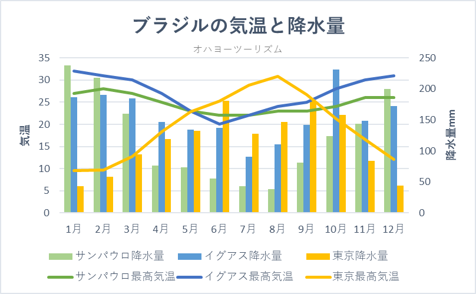

ブラジルは南米の国です。面積は約850万㎢と南米では最大で、世界では5位となっています。
ブラジルには世界最大の流域面積を誇るアマゾン川があったり、有名なコパカバーナビーチがあったりします。
|
ブラジル最大の都市サンパウロでは1年を通して10℃から30℃となっており、年間降水量は1400mmと豊川市より少ない。（豊川市の年間降水量は1800mm）
パンタナールという世界最大級の熱帯性湿地があります。「野生動物の楽園」と言われるほど多種多様な野生動物が生息しており、ジャガーやオオカワウソが見られます。
ポルトガルの植民地にされていた歴史があるため、キリスト教とのかかわりが強くリオデジャネイロのコルコバードのキリスト像もその一つです。
やはりアマゾン河口のマングローブ林は最も有名です。ブラジル全体で約140万haもあります。
4 質の高い教育をみんなに
ブラジルでは特に教育の普及に力を入れています。